Reproducing the Spatial Outliers Explaining Heterogeneity
A complete walkthrough for applying the SOH model to a spatial
explanation problem in any domain: turn local anomalies at unsampled locations into
multi-scale explanatory variables, and measure how much heterogeneity they explain beyond
the covariates themselves.
code/ pipeline scripts · data/demo/
(synthetic 300-unit demo) · config/config.R — unzip, then run
Rscript code/99_run_all.R from the SOH/ folder root.
To cite the SOH model and its R packages and codes in publications, please use:
Ren K, Song Y, Yang X, Wang X, Chen M, Yu Q (2026). Spatial outliers as a
pattern determinant for explaining heterogeneity. IJGIS.
doi ·
PDF
Ren K, Song Y, Yu Q (2025). Second-dimension outliers for spatial prediction.
IJGIS 40(6):1915–1942.
doi ·
PDF
Song Y (2022). The second dimension of spatial association.
Int J Appl Earth Obs Geoinf 111:102834.
doi ·
PDF
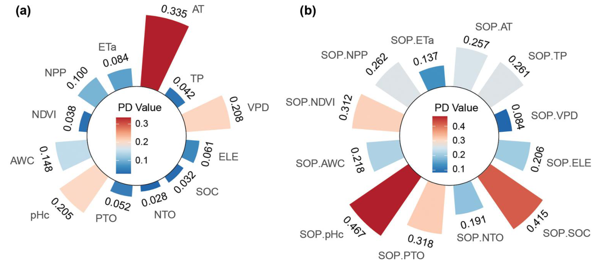
1 Method Overview & Reproduction Scope
1.1 Core Idea
Most spatial heterogeneity models read a covariate at the analysis unit and ask how much of
the response it explains. That reads only the first dimension. The SOH model adds a
second dimension: the configuration of local anomalies at nearby locations where the
response was never observed. Two units with identical air temperature can sit in entirely
different neighbourhoods, one beside an anomalously cold pocket and one in a uniform surround,
and SOH claims that difference explains variation the first dimension cannot reach.
The model turns those anomalies into multi-scale explanatory variables called spatial
outlier patterns (SOPs), stratifies the analysis units with a regression tree, and scores
the stratification with the geographical detector power of determinant (PD).
Research problem: covariate values at the analysis unit ignore the spatial
configuration of anomalies in the surroundings, so conventional stratified-heterogeneity
models leave second-dimension variation unexplained.
One-line contribution: SOH converts local anomalies at unsampled grid cells into
positive and negative SOP variables across many neighbourhood radii, and shows they
out-explain the covariates they were derived from.
Why it matters: covariates that look weak at the unit (soil carbon in the barley
case: PD 0.032) can be among the strongest drivers once their anomaly pattern is
read (SOP.SOC: 0.415) — a discovery the first dimension cannot make.
◆Reader anchor
Read each unit's surroundings, not just the unit: accumulate the local anomalies of every
covariate field inside neighbourhood buffers of many radii, keep positive and negative
patterns separate, and test — against a conditional permutation null — whether those
patterns explain response heterogeneity beyond the covariates themselves.
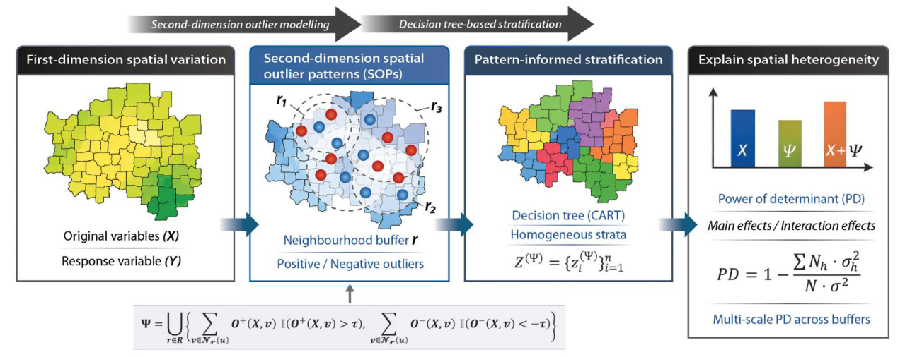
Published reference · SOH
The SOH model. First-dimension covariate variation (X) and second-dimension outlier patterns
(Ψ) are each turned into strata by a decision tree, and the geographical detector measures the
power of determinant of every predictor configuration across multiple neighbourhood
buffers.Ren et al. (2026), Figure 1.
!The power of determinant is not prediction
PD measures how well a partition of the units separates the response, on the same
data used to build the partition. It is not cross-validated, and it carries no
causal claim.
If you need predictive accuracy at new locations, the right method is the SDO model of
Ren et al. (2025), not this one.
Positive spatial autocorrelation inflates PD, which is why Moran's I is reported next
to it in Step 3.
1.2 Method Logic
Three papers form one line, and each supplies a piece the next one uses; the geographical
detector supplies the scoring statistic underneath all of them.
SDA 2022the second dimension: association carried by unsampled locations Song, JAG · PDF
→
SDO 2025outliers become signal; prediction R² 0.555 → 0.671 Ren et al., IJGIS · PDF
→
SOH 2026outlier machinery moved from prediction to explanation Ren et al., IJGIS · PDF
✓Which paper for which question
Cite Song (2022) for the second dimension itself, Ren (2025) for the outlier
construction, Ren (2026) for the SOH model and PD, and Wang et al. (2010) for the
geographical detector. The distinction to hold on to: SDO improves prediction, SOH
explains heterogeneity.
Key concepts and equations
Four building blocks drive the whole pipeline, one from each reference:
Stratified power (PD / q-statistic): q = 1 − SSW/SST over
the strata of a partition, with a non-central F significance test; reimplemented natively
in code/R/fn_pd.R — Wang et al. (2010)
doi
The second dimension: information at locations outside the samples carries
spatial association, generated from a searching range plus an operator over the
surrounding field — Song (2022)
doi ·
PDF
Spatial outlier patterns (Equations 3–4): grid values are standardised
locally within each neighbourhood Nr(u), and z-scores beyond ±s local
standard deviations are accumulated into SOP+ and SOP− — outliers
treated as signal, not noise — Ren et al. (2025)
doi ·
PDF
The SOH model (Equations 5–6): SOP blocks become explanatory variables, a CART tree
stratifies the units, PD scores every configuration, and a conditional permutation null
tests whether the second dimension adds anything beyond the first —
Ren et al. (2026)
doi ·
PDF
1.3 Reproduction Scope
Everything tagged Demo run on this page regenerates from the scripts and data in this
folder; everything tagged Published reference is shown as a static comparison image or
table from Ren et al. (2026). The demo runs end to end with
R 4.6.0 — all 13 result tables regenerate byte-identically to the copies shipped in
expected-results/tables/.
Item
Demo template
Published reference
Data
300 synthetic analysis units + 3,600 grid cells, 6 covariates with planted
anomalies (data/demo/)
Barley production over the eastern Australian barley belt; 12 covariates in
4 categories on ~1 km grids
Tables
T01–T13 regenerated into 03_results/tables/; reference
copies in expected-results/tables/
Values from Ren et al. (2026) Figs 7–10 excerpted beside the demo results in
§3
Figures
F01–F10 regenerated by code/07_figures.R (web copies in
assets/demo_figures/)
Ren et al. (2026) Figs 1, 5–10, embedded as static reference images
What the template regenerates versus what is shown as published reference.
Published application of this exact pipeline
Application
Spatial unit
Response
Predictors
Status
Barley productivity drivers, eastern Australia (Ren et al. 2026 —
reference figures on this page)
Production unit on ~1 km grids
Barley production (ton/km²)
12 covariates (climate / topography / soil / vegetation) + their SOP blocks over
ten 20–200 km buffers
Published (IJGIS)
Synthetic demonstration (this page — all demo outputs)
300 points + 3,600 grid cells
Response with planted anomaly signal
6 covariates + their SOP blocks
Reproducible demo
The published application shares the pipeline; the synthetic demo makes it
reproducible without external data — and, because the anomaly locations are planted, it
doubles as a correctness check.
How to use this page
To reproduce the demo: this folder already contains everything — the R scripts
(code/), the configuration (config/), and the synthetic example
data (data/demo/). Run Rscript code/99_run_all.R from the folder
root; every expected output is shown on this page so you can verify each step.
To apply SOH to your own problem: read §2.3 (the two-table data contract), edit the
§2.2 config and the ADAPT blocks of the preparation script, then run the same
scripts unchanged (§4.1).
To write the paper: §4.2 maps every result table to its manuscript element and
settles the application-versus-extension decision first.
2 Setup, Structure & Data Contract
2.1 Environment & Dependencies
The template runs on a bare R installation. Only rpart and ggplot2
are required; the rest add features and degrade gracefully when absent. The power-of-determinant
q statistic is implemented natively, so the GD package is optional. The pipeline
was run with R 4.6.0; a full run records its own session-info.txt under
03_results/logs/.
R console
# minimum to run the pipeline
install.packages(c("rpart", "ggplot2"))
# optional, each unlocks one feature
install.packages(c(
"patchwork", # multi-panel figures (Moran, augmentation)
"spdep", # global Moran's I of the response
"sf", # read shapefile study areas in your own data prep
"GD" # cross-check the native q statistic against the published implementation
))
Package
Role
Required?
rpart
CART stratification (Equation 5)
yes
ggplot2
all figures
yes
patchwork
combine multi-panel figures
optional
spdep
Moran's I with permutation inference
optional
sf
shapefile ingestion in your data prep
optional
GD
verify the native PD against GD::gd()
optional
Runs with R 4.6.0. Missing optional packages print a one-line notice and the
affected step is skipped, never failed.
◆No GD dependency by design
The geographical detector q statistic and its non-central F significance test are
reimplemented in base R in code/R/fn_pd.R. When GD happens to be
installed, soh_pd_verify_against_GD() runs both and returns them side by side
so you can confirm they agree.
2.2 Project Structure & Configuration
Everything study-specific lives in one file, config/config.R. No path, variable
name, buffer radius, or threshold belongs anywhere else. The numbered scripts run in order and
each reads from and writes to data/interim/, so any step can be re-run on its own
after a configuration change.
folder tree
SOH/
├── soh.html # this guide
├── assets/ # figures shown in this guide (demo + paper)
├── config/config.R # every study-specific setting, in one file
├── data/
│ ├── demo/ # synthetic example tables (points.csv, grids.csv)
│ ├── interim/ processed/ # created on first run / your own data
├── code/
│ ├── 00_setup.R # config, libraries, function loading
│ ├── 01_prepare_data.R # assemble and validate the two tables
│ ├── 02_generate_sops.R # build the second dimension
│ ├── 03_pd_individual.R # Moran's I and single-factor PD
│ ├── 04_pd_interactions.R # SOP-SOP, covariate-SOP, categories
│ ├── 05_validation.R # gains, scenarios, permutation nulls
│ ├── 06_sensitivity.R # scale and threshold sweeps
│ ├── 07_figures.R # all figures
│ ├── 99_run_all.R # the whole pipeline
│ ├── R/ # fn_utils, fn_sop, fn_pd, fn_experiments, fn_plots
│ └── gee/ # Google Earth Engine covariate extraction
├── expected-results/tables/ # T01–T13 of the run
└── 03_results/ # tables | figures | logs (auto-generated on run)
Main configuration file
To run the built-in synthetic demo used throughout this page, leave data$mode as
"demo"; to run your own study, set it to "user" and give the column
names of your two tables.
config/config.R (excerpt)
# config/config.R (excerpt — the full file documents every setting, with the
# values used by the published barley study recorded beside each one)
cfg <- list(
study = list(id = "demo", response_label = "Response (unit)"),
data = list(
mode = "demo", # "demo" | "user"
crs_epsg = 3577, # projected CRS with metric units
dist_unit = "km" # unit of x/y AND of the buffers below
),
variables = list(
codes = c("V1","V2","V3","V4","V5","V6"),
category = c(V1="C1", V2="C1", V3="C2", V4="C2", V5="C3", V6="C3")
),
sop = list(
buffers = seq(20, 200, 20), # neighbourhood radii, in dist_unit
sd_threshold = 2, # outlier threshold, in local SD
statistic = "zsum" # accumulate z-scores beyond the threshold
),
pd = list(cart_cp = 0.01) # rpart complexity parameter
)
✓Copy per study
Treat this folder as a template, not a study. When a real project starts, copy the whole
folder and edit config/config.R in the copy. That keeps the reference
implementation clean and every study self-contained and independently reproducible. When
writing the manuscript, quote parameter values from the config, never from memory.
2.3 Data Contract
The SOH model needs exactly two tables on a common projected coordinate system with
metric units.
points — one row per analysis unit, the support of the response. This is
what the model explains. Columns: id, x, y,
response, and one column per covariate.
id
x
y
response
V1
V2
V3
V4
V5
V6
1
118.4
242.1
0.83
1.20
−0.44
0.07
1.55
−0.62
0.30
2
305.7
118.9
−1.14
−0.88
0.51
−1.02
0.14
0.77
−0.19
3
262.0
401.3
0.42
0.33
1.28
0.66
−0.41
−0.05
1.11
…
…
…
…
…
…
…
…
…
…
points.csv — analysis units. x/y are
projected easting/northing in the same unit as the buffers, not
longitude/latitude.
grids — one row per fine grid cell covering the study area and a
margin beyond it. These unsampled cells are the second dimension. Same columns as
points, minus response.
id
x
y
V1
V2
V3
V4
V5
V6
1
0.0
0.0
0.51
−0.20
0.88
1.02
−0.33
0.14
2
10.2
0.0
0.49
−0.18
0.83
0.97
−0.30
0.19
…
…
…
…
…
…
…
…
…
grids.csv — the covariate surface. Must be finer than the analysis
units and must extend past the study boundary by at least the largest buffer
radius.
!The margin rule
Neighbourhoods extend past the outermost units. If the grid is clipped to the study
boundary, edge units get truncated neighbourhoods and systematically weaker outlier
patterns. Clip your covariates to the study area plus a buffer of at least the
largest radius. code/01_prepare_data.R warns when the margin falls below half
the largest buffer.
3 Reproduction Pipeline, Results & Validation
3.1 Pipeline Execution
The whole pipeline runs end to end in about fifteen seconds on the demo. Every step reads its
input from data/interim/ and writes its output there, so any single step can be
re-run on its own after a configuration change. Step numbers on this page match the script
numbers: Step 1 runs code/01_prepare_data.R, and so on.
The demo is the regression test. The signal-off column is the falsification case —
if the conditional null passes there, the pipeline has a leak.
✓Everything is logged
03_results/logs/run_<date>.log records the full run and
session-info.txt captures the exact package versions. Commit
config/config.R, the logs, and the deposit DOI together, and anyone can
reproduce your numbers exactly.
3.2 Core Analytical Steps
Four analytical stages build the model (Steps 1–4), and two validation stages test it
(Steps 5–6, in §3.3). Each stage has the same anatomy: purpose → script → result →
how to read it, with the demo output on the left of every figure pair and the published
counterpart from Ren et al. (2026) on the right.
Step 1
Data preparation
What this step does
Build the two tables (synthetic in demo mode, your ingestion code in user mode), then run
validation checks that catch the failures which silently produce meaningless PD values:
unprojected coordinates, a grid coarser than the units, a missing margin, constant
covariates.
Code
terminal
Rscript code/01_prepare_data.R
# demo mode injects known local anomalies into half the covariates, so the
# whole pipeline runs before you have any data of your own.
Example output
01 PREPARE DATA
mode: demo — generating a synthetic dataset with known anomalies
demo tables written to data/demo/
validation passed
table written: 03_results/tables/T01_data_summary.csv (7 rows)
analysis units: 300 grid cells: 3600 covariates: 6
cached: data/interim/data.rds
Demo run
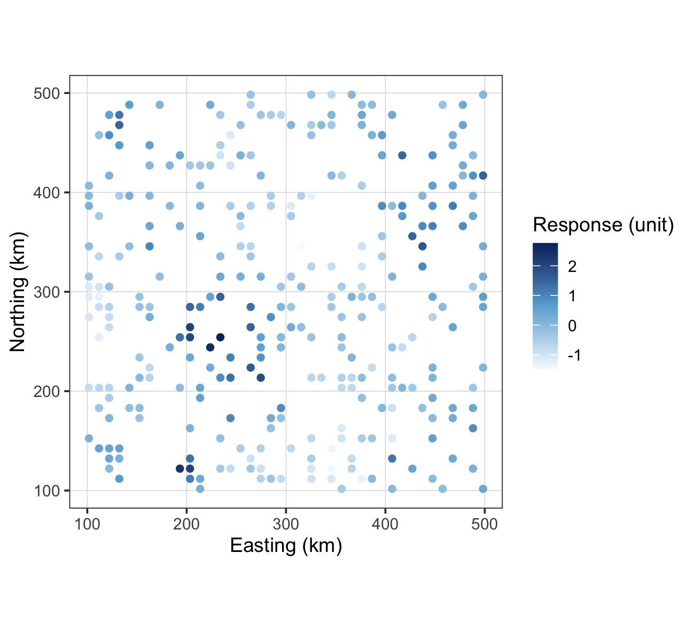
F01 — the demo response over the 300 analysis units: spatially structured
(Moran's I = 0.585, Step 3), depending on both the smooth covariates and the
planted anomaly signal.Demo run
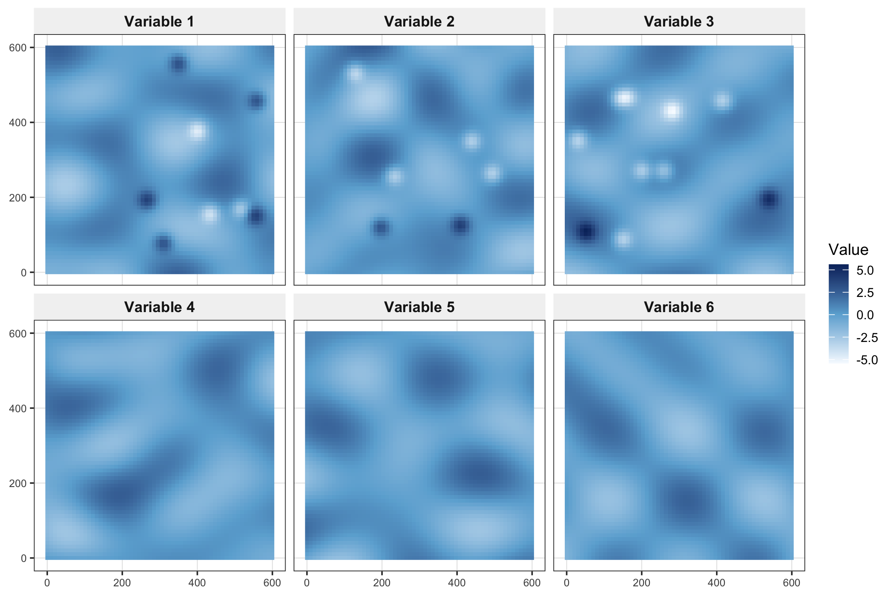
F02 — the demo covariate fields on the fine grid: smooth first-dimension
surfaces, half of them carrying compact injected anomalies.
◆How to read this result
(what the demo builds) A smooth autocorrelated covariate field (the first
dimension) plus compact injected anomalies (the second dimension), and a response
that depends on both. Because the anomaly locations are known, the demo
doubles as a correctness check.
(the knob that matters)cfg$demo$outlier_signal_weight controls
how much the response depends on the second dimension. Set it to 0 and the second
dimension carries no information — the falsification case the method must be
unable to claim (see Step 5).
(what to check first) The buffer diagnostic printed here reports whether
your largest radius sits at the recommended 10–20% of the maximum pairwise
distance between units. Too large and SOPs stop being local; too small and
neighbourhoods hold too few cells for a standard deviation to mean anything.
✓Checkpoint
T01_data_summary.csv written; the console reports 300 analysis units,
3,600 grid cells, 6 covariates, and "validation passed" before you move on.
Step 2
Build the second dimension (SOP)
What this step does
For each covariate and each neighbourhood radius, standardise the grid values
locally and accumulate the anomalies. Positive and negative patterns are kept
separate throughout, because a neighbourhood surrounded by unusually high values and one
surrounded by unusually low values are different geographic situations.
◆Equations 3–4
z(xv) = ( xv − meanNr(u) ) / sdNr(u) SOP+(X,r,u) = Σ z(xv) for v in Nr(u) with z(xv) > s SOP−(X,r,u) = Σ z(xv) for v in Nr(u) with z(xv) < −s
Each covariate yields 2 × (number of
radii) SOP columns per unit. The standardisation is local to each neighbourhood, not
global — that is what makes an SOP a local anomaly rather than a global extreme.
s = 2 reproduces the published model.
Code
terminal
Rscript code/02_generate_sops.R
# under the hood (code/R/fn_sop.R):
sopvars <- soh_generate_sop_all(points, grids, cfg)
# -> named list, one data.frame per covariate, each with 2 * length(buffers) columns
# named p_b20, p_b40, ... (positive) and n_b20, n_b40, ... (negative)
Example output
A diagnostic table (T02) reports, per covariate, the share of empty SOP
cells. A column that is entirely zero carries no information, usually because the buffer is
too small to hold min_cells grid cells, or the threshold is too strict for a
smooth covariate.
variable
n_columns
zero_share
mean_positive
mean_negative
V1
20
0.33
20.3
−44.9
V2
20
0.33
38.1
−26.6
V3
20
0.43
38.3
−39.4
V4
20
0.59
37.9
−16.7
T02_sop_diagnostics.csv (demo). A zero_share above
0.9 flags a covariate with no local anomaly structure.
Demo run
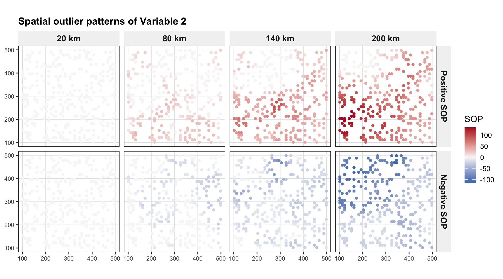
Demo SOPs for the covariate with the strongest SOP block, positive (red,
top) and negative (blue, bottom) across four buffer radii. Anomalies are near-absent at
20 km and build as the neighbourhood widens.Published reference · SOH
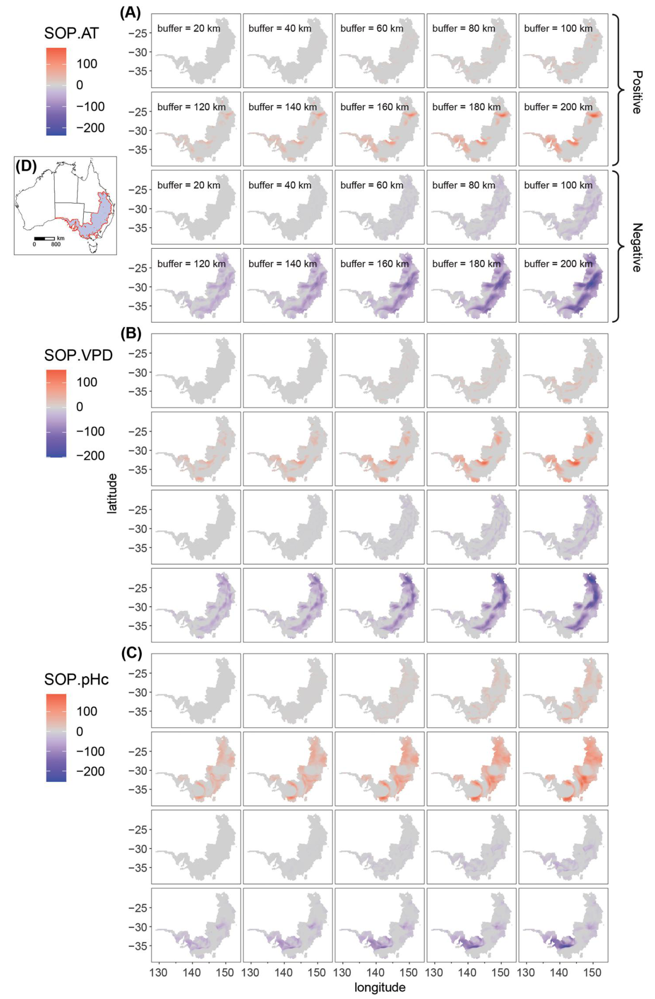
Ren et al. (2026) Fig 6: SOPs of the three highest-PD variables (SOP.AT,
SOP.VPD, SOP.pHc) across ten buffers, over the eastern Australian barley
belt.
Same construct, same behaviour: at small radii almost nothing exceeds
two local standard deviations; as the radius grows, coherent positive and negative regions
emerge and sharpen. That growth is the signal the scale-sensitivity step in Step 6
quantifies.
Paper reference
Ren et al. (2026) Fig. 6 (PDF);
the SOP construction follows Ren et al. (2025)
(PDF) and the second-dimension idea of Song (2022)
(PDF).
◆How to read this result
(paper reading) The SOP maps show that anomaly structure is
scale-dependent: the same covariate is locally unremarkable at 20 km but strongly
patterned at 200 km. Positive and negative regions are spatially organised, not
scattered — evidence that they encode real geography rather than noise.
(mechanism) An SOP is high where a unit sits in a neighbourhood whose
covariate field departs sharply from its local average. It reads the shape
of the surroundings, which a single covariate value at the unit cannot
express.
(case reasoning) In barley, the positive SOP of soil pH concentrates where
alkaline pockets interrupt otherwise acidic cropland; in a health study, expect
the positive SOP of PM2.5 to light up around point sources embedded in cleaner
surroundings. The map is a hypothesis generator for where second-dimension
effects will matter.
(what to check) If your SOP maps are blank at every radius, the covariate
is too smooth to have a second dimension. Lower sd_threshold, widen
the smallest buffer, or accept it as a null result rather than tuning until
something appears.
✓Checkpoint
T02_sop_diagnostics.csv shows zero_share 0.33–0.59 on the demo (no
covariate above 0.9), and data/interim/sopvars.rds is cached.
Step 3
Individual power of determinant
What this step does
Before scoring the SOPs, establish that the response is spatially structured at all, then
compare each covariate against its own SOP block. Each covariate and each SOP block is
stratified by a CART tree and scored by PD (Equation 6); the core SOH claim is that the SOP
block reaches a higher PD than the covariate it was derived from.
Code
terminal + R
Rscript code/03_pd_individual.R
# global Moran's I of the response with 999 permutations (spdep)
individual <- soh_exp_individual(points, sopvars, cfg)
# label type qv sig n_strata
# SOP.V2 SOP 0.614 3.1e-10 19
# SOP.V1 SOP 0.556 7.8e-10 16
# ...
# V1 variable 0.263 9.5e-10 10 <- strongest raw covariate
Spatial autocorrelation of the response
Demo run
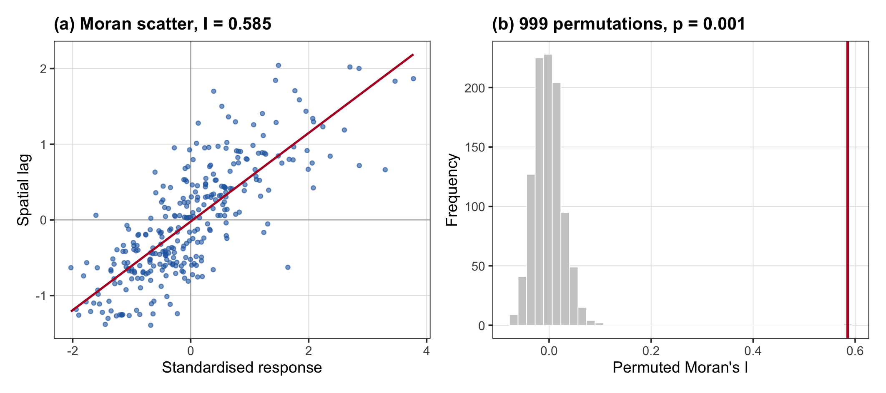
Demo Moran's I = 0.585 (p = 0.001). Left: Moran scatter of standardised
response against its spatial lag. Right: the observed statistic (red) far outside the
permutation null.Published reference · SOH
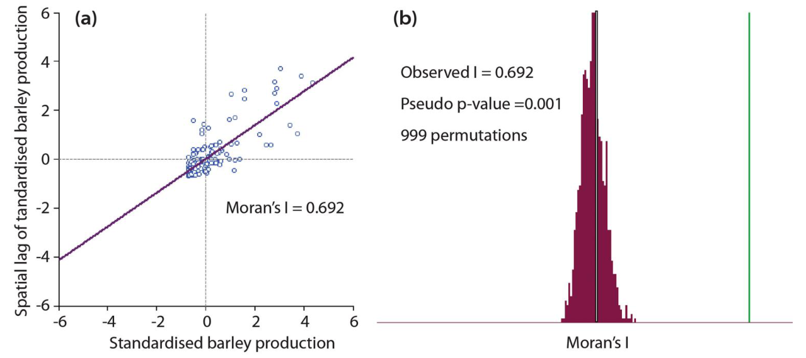
Ren et al. (2026) Fig 5: barley production Moran's I = 0.692
(pseudo-p = 0.001, 999 permutations).
Both responses are strongly, significantly autocorrelated. This is a
prerequisite the SOH claim rests on, and also the caveat attached to every PD value
below.
Covariate versus its SOP block
Demo run
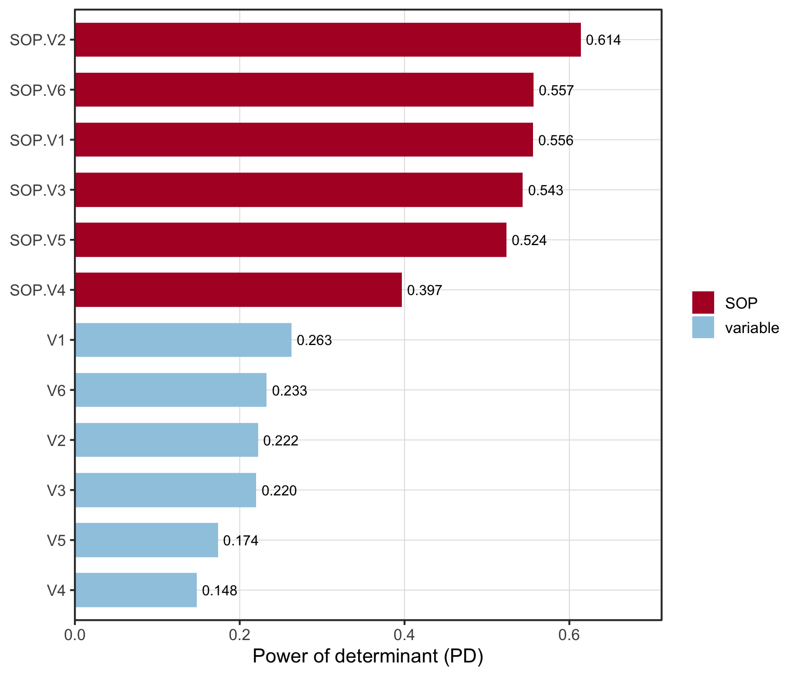
Demo PD of each covariate (blue) and its SOP block (red). Every SOP block
outscores its covariate; the strongest SOP reaches 0.61 against 0.26 for the strongest
raw covariate.Published reference · SOHRen et al. (2026) Fig 7: individual PD of the 12 covariates (a) and their
SOPs (b). SOP.pHc reaches 0.467 against 0.205 for pHc; SOP.SOC 0.415 against 0.032 for
SOC.
The rank shift is the headline of this step. Soil variables that are
weak on their own (SOC 0.032) become among the strongest once their spatial anomaly pattern
is read (SOP.SOC 0.415).
Paper reference
Ren et al. (2026) Figs. 5 and 7
(PDF); the PD statistic follows Wang et al.
(2010).
◆How to read this result
(paper reading) Each SOP block outscoring its covariate is the SOH claim in
its simplest form: the configuration of local anomalies explains more
heterogeneity than the covariate's own value. In Ren et al. (2026) SOP.pHc (0.467)
more than doubles pHc (0.205), and SOP.SOC (0.415) beats SOC (0.032) more than
tenfold.
(mechanism) A high SOP-block PD means units that share a neighbourhood
anomaly signature also share response levels — spatial dependence acting through
the surroundings, not the site.
(case reasoning) Rank the SOP-minus-covariate gap per variable. The largest
gaps flag drivers that act through spatial context. In barley the soil
variables gain most, consistent with patchy soil chemistry that a plot-level
average washes out; in an urban port expect amenity and accessibility variables to
gain most, because what a neighbourhood is near matters more than what it
contains.
(what to check — and hold your claim) A high SOP-only PD is not yet
evidence. SOPs summarise the covariate field around a unit, so they correlate
with the covariate at the unit by construction, and there are many of them.
Withhold the second-dimension claim until the conditional null in Step 5
clears. Also confirm n_strata is well below the number of units, so
the tree is stratifying rather than memorising.
✓Checkpoint
T03_moran.csv reports Moran's I = 0.585 (p = 0.001);
T04_individual_pd.csv is led by SOP.V2 = 0.614 against 0.263 for the
strongest raw covariate on the demo data.
Step 4
Interactions
What this step does
PD is computed for every pair of factors and classified in geographical-detector terms —
whether two factors together explain more than the sum of their parts (enhance, nonlinear),
more than the stronger alone (enhance, bivariate), or less (weaken). Interactions run at two
levels: individual SOP pairs and thematic category blocks.
Demo SOP × SOP interaction matrix. Every pair exceeds either SOP alone; the
strongest reaches 0.70.Published reference · SOH
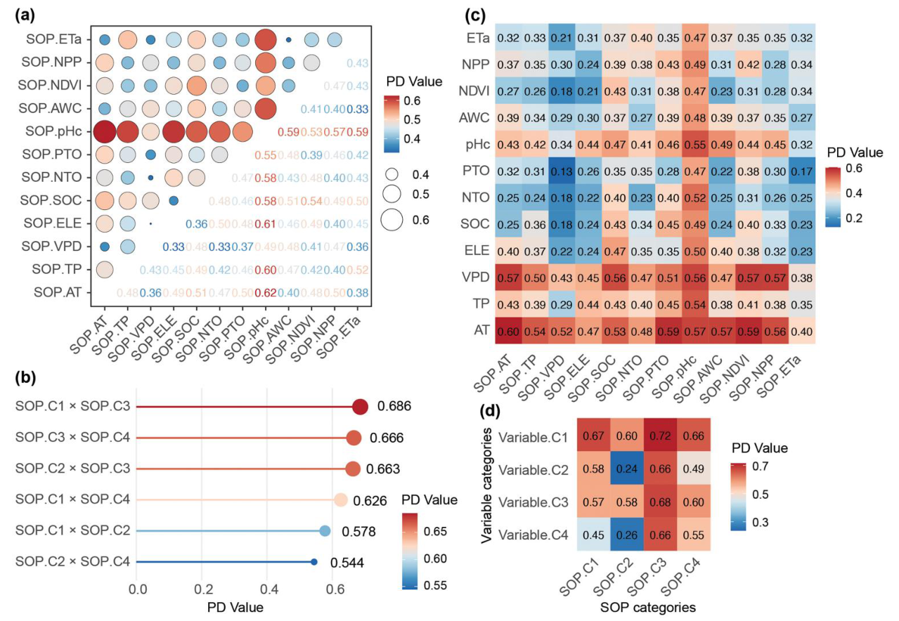
Ren et al. (2026) Fig 8: interaction PD as a dot matrix (a, SOP × SOP),
category lollipop (b), covariate × SOP heatmap (c), and category × category (d).
The published matrices are denser (12 covariates, four categories) but
tell the same story: interactions lift PD above every individual factor, and the lift is
strongest across thematic boundaries.
Interaction (Ren et al. 2026)
PD
SOP.C1 × SOP.C3 (climate × soil)
0.686
SOP.C3 × SOP.C4 (soil × vegetation)
0.666
SOP.C2 × SOP.C3 (topography × soil)
0.663
Variable.C1 × SOP.C3 (climate value × soil anomaly)
0.72
Top category-level interactions reported in the paper. Soil anomaly patterns
(SOP.C3) appear in every strongest pair.
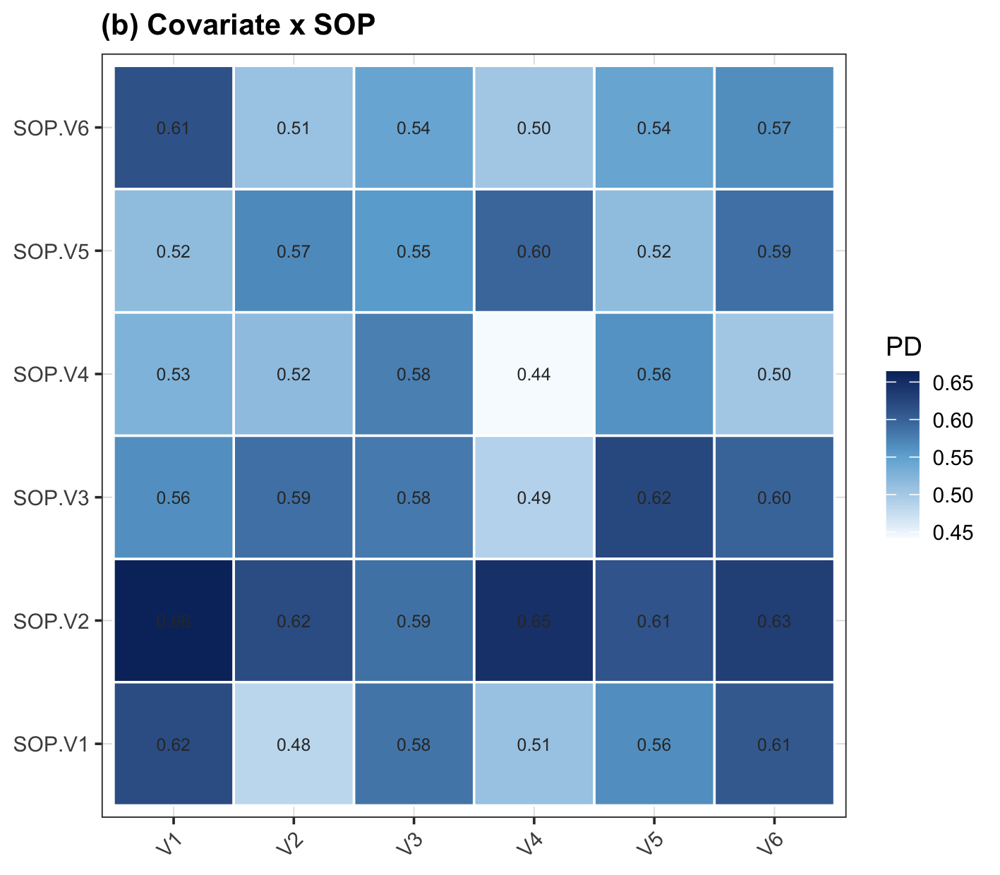
Demo run F06b — covariate × SOP
interaction heatmap, the demo counterpart of panel (c) of Ren et al. (2026)
Fig 8.
Paper reference
Ren et al. (2026) Fig. 8
(PDF); the interaction typing follows the
geographical detector of Wang et al. (2010).
◆How to read this result
(paper reading) The strongest interactions in Ren et al. (2026) all involve
the soil-pH and soil-carbon SOPs crossed with a climate factor. Climate sets the
broad envelope of barley productivity; soil anomalies explain the departures
within it, so the two together partition the response far better than either alone
(SOP.C1 × SOP.C3 = 0.686 against 0.467 for the best single factor).
(mechanism) An 'enhance, bivariate' or 'enhance, nonlinear' label means the
two factors carve the study area along different spatial seams. Stacking
them creates finer, more homogeneous strata than either seam alone.
(case reasoning) Read the interaction table as a map of which driver
pairs co-govern the outcome. Cross-category interactions (climate × soil)
are more interesting than within-category ones, because they point to a coupled
process rather than two facets of one. In a health port, a pollution-SOP ×
density-SOP interaction would flag neighbourhoods where an emission anomaly and a
crowding anomaly compound.
(what to check) The interaction-type distribution (T08) is a
result in itself. A model where every pair merely 'enhances bivariate' behaves
differently from one full of 'enhance nonlinear' pairs — the latter signals
genuine synergy that no additive model would find.
✓Checkpoint
T05_pairs_sop_sop.csv is led by SOP.V1 & SOP.V2 = 0.695
('enhance, bivariate') on the demo data; T08_interaction_types.csv holds
the type distribution.
3.3 Results, Validation & Interpretation
Three checks in increasing strength close the pipeline: how much the second dimension adds
per variable, which of the three overall models wins, and — decisively — whether the gain
survives a null that controls for both dimensionality and the SOP–covariate correlation
(Step 5); a scale and threshold sweep then shows the conclusions do not hinge on the two
free parameters (Step 6).
Step 5
Validation — the headline
What this step does
Quantify the gain from the second dimension per covariate (augmentation), compare the
three overall scenarios (A1 SOPs only, A2 both dimensions, A3 covariates only), and run the
two permutation nulls. The conditional null is an addition to the source study and the
single most important part of the reproduction.
Code
terminal + R
Rscript code/05_validation.R
aug <- soh_exp_augmentation(points, sopvars, cfg) # per variable and per category
Augmentation: gain from adding the SOP
Demo run
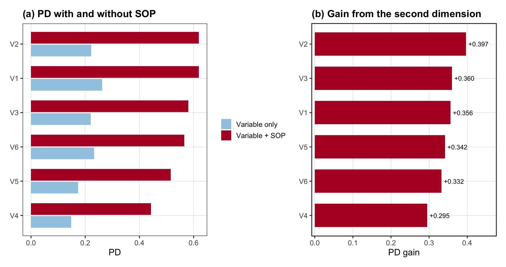
Demo: PD of each covariate with and without its SOP (left), and the gain
(right). Every covariate gains; the median gain is +0.34.Published reference · SOH
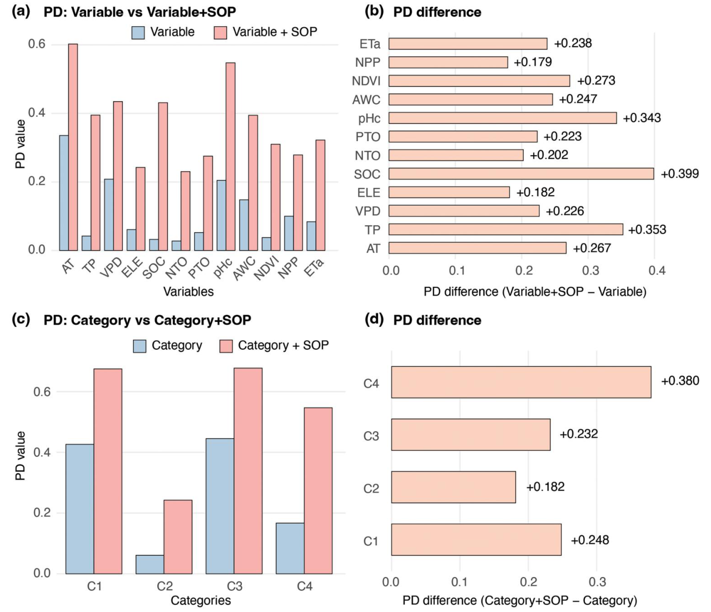
Ren et al. (2026) Fig 9: covariate-level (a,b) and category-level (c,d) PD
with and without SOP. Gains range from +0.179 (NPP) to +0.399 (SOC); every category
improves.
The demo and the paper produce the same shape — a uniform, sizeable
positive gain across all variables — which is exactly what a working SOH reproduction should
look like.
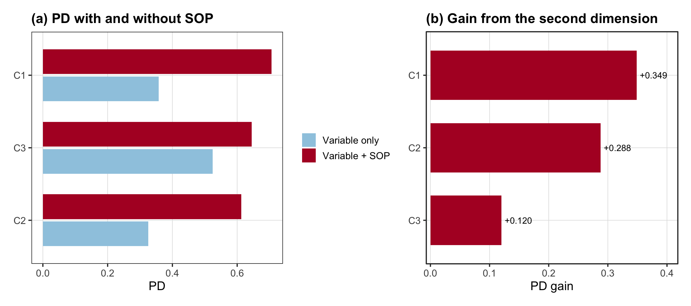
Demo run F07b — category-level
augmentation, the demo counterpart of panels (c,d) of Ren et al. (2026)
Fig 9.
The three overall scenarios
Demo run
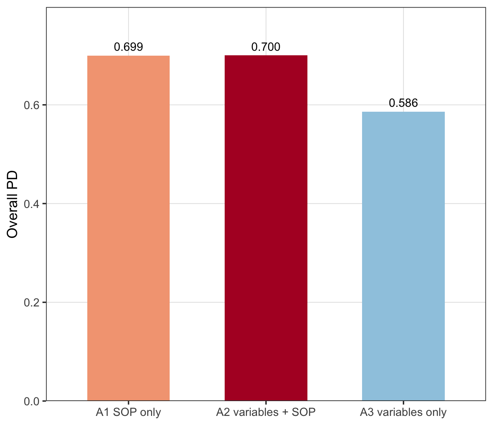
Demo overall PD: A1 SOP-only 0.70, A2 both 0.70, A3 covariates-only 0.59.
The second dimension lifts overall PD by +0.11.Published reference · SOH
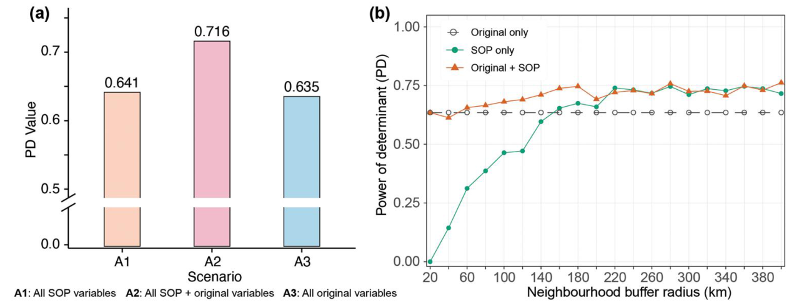
Ren et al. (2026) Fig 10a: A1 = 0.641, A2 = 0.716, A3 = 0.635. The combined
model is best; SOPs alone slightly beat covariates alone.
In both, adding SOPs to the covariates raises overall PD, and SOPs on
their own are competitive with the entire conventional covariate set.
The two permutation nulls — the decisive test
Two mechanisms inflate the SOP-only PD regardless of whether local anomalies carry any
information: sheer dimensionality (hundreds of SOP columns), and the fact that an SOP
correlates with the covariate field it summarises. Only a conditional null controls
for both.
Test
observed
null mean
empirical p
verdict (demo)
Marginal — SOP-only vs shuffled SOP
0.699
0.400
0.02
clears (necessary, weak)
Conditional — covariates+SOP vs covariates+shuffled SOP
0.700
0.612
0.02
clears (decisive)
reference: covariates only (A3)
0.586
—
—
—
T11_permutation_null.csv (demo, signal on). The conditional null
asks the question the paper actually claims: does the second dimension add anything
beyond the first?
!Why the marginal null is not enough — the falsification test
Set cfg$demo$outlier_signal_weight = 0 so the response depends only on
the smooth covariates, and re-run. The SOP-only PD still reaches 0.745 and still clears
the marginal null — yet covariates alone score 0.825, and the conditional null fails
at p = 1.0. A study that reported that 0.745 as evidence for the second dimension
would be reporting an artefact. Always report the conditional null.
Paper reference
Ren et al. (2026) Figs. 9–10
(PDF); the permutation-null layer is an addition of
this template.
◆How to read this result
(paper reading) Ren et al. (2026) report the combined model as best (0.716)
and interpret the SOP gain as evidence that outlier patterns explain heterogeneity
beyond the covariates. The augmentation figure supports this variable by
variable.
(the deeper point) A high SOP-only PD proves nothing on its own, because
SOPs are built from the covariate field and there are hundreds of them. The claim
lives or dies on the conditional null: real SOPs must beat shuffled SOPs
once the covariates are already in the model.
(case reasoning) When you port SOH, run the falsification test first on
your own data — build a response you know depends only on covariates and
confirm the conditional null fails. If it passes on a known-null response, your
pipeline has a leak (often an edge-effect or an id misalignment between points and
grids).
(what to report) Put the conditional null in the body of the paper, not the
supplement. A reviewer who has to hunt for it will assume it was buried, and it is
the one number that separates a real second-dimension effect from SOPs quietly
proxying the covariates.
✓Checkpoint
T11_permutation_null.csv shows the conditional null clearing at
p = 0.02 (observed 0.700 vs null mean 0.612) with the signal on — and failing
at p = 1.0 in the signal-off falsification case.
Step 6
Scale and threshold sensitivity
What this step does
Sweep the neighbourhood radius and the outlier threshold. The headline methodological
finding of the reference study came from the scale sweep: PD of the SOP-only and combined
models rose with radius and stabilised near 200 km, while the covariate-only model was
flat. That plateau is the scale at which local anomaly structure stops adding context.
Code
terminal + R
Rscript code/06_sensitivity.R
scale_df <- soh_exp_scale(points, sopvars, cfg) # PD vs largest radius
thr_df <- soh_exp_threshold(points, grids, cfg) # PD vs 1.5 / 2 / 2.5 SD
Example output
Demo run
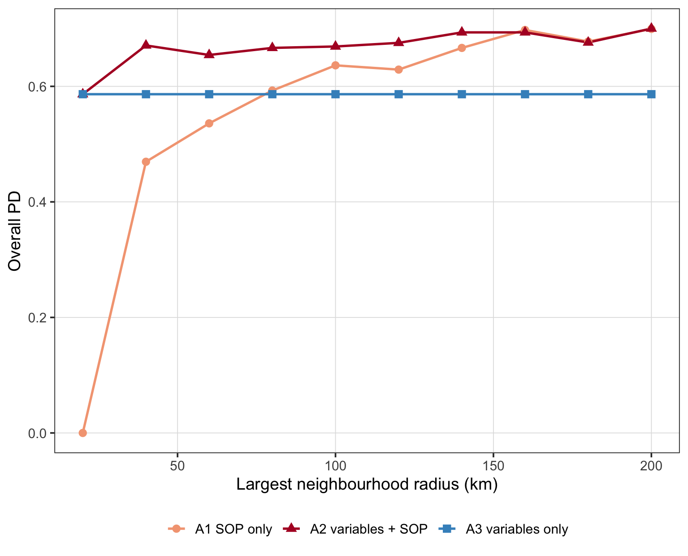
Demo: overall PD against the largest neighbourhood radius. SOP-only (orange)
and combined (red) rise then plateau; covariates-only (grey) is flat by
construction.Published reference · SOHRen et al. (2026) Fig 10b: SOP-only PD climbs steeply to ~140 km, then
flattens toward a plateau near 200 km; original-only is scale-invariant.
Identical qualitative behaviour. The plateau radius is the scale
finding to report — the distance beyond which widening the neighbourhood adds no explanatory
context.
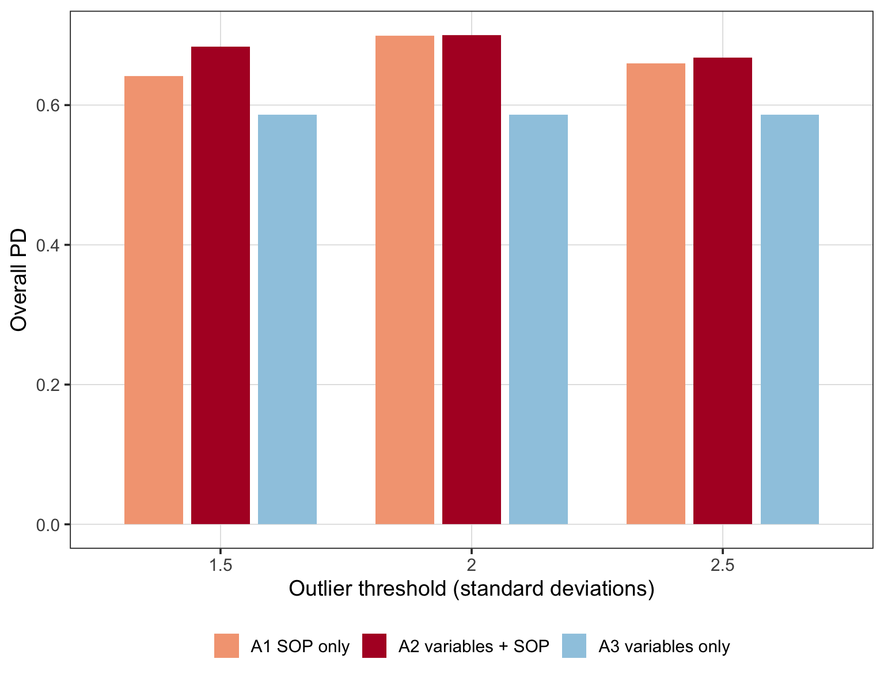
Demo run Demo threshold sweep: overall
PD under outlier thresholds of 1.5, 2, and 2.5 standard deviations. Combined PD moves
within a spread of 0.03, so the conclusions do not hinge on the choice of
2 SD.
(paper reading) The ~200 km plateau means barley's second dimension is a
broad-scale phenomenon: local anomalies matter up to a regional extent, beyond
which the neighbourhood becomes so wide that it converges on the global average
and SOPs stop being local.
(mechanism) Read the plateau on the SOP-only curve, not the combined
one. The combined curve is anchored by the covariate floor and would report a
plateau it inherited rather than earned.
(case reasoning) The plateau radius is a domain fingerprint. A
commuting-scale outcome (housing, crashes) will plateau at a few kilometres; a
climate-driven outcome (crops, fire) at hundreds. If your PD is still rising at
the largest radius in the sweep, extend cfg$scale_sweep before
claiming any threshold — the finding is the location of the plateau, and
you cannot report one you have not reached.
(what to check) Because CART is greedy, the scale curve need not rise
monotonically and the combined model can dip below SOP-only. That is expected
behaviour, not a bug. Interpret the plateau, not each step; the threshold sweep
confirms the conclusions are stable to the one free parameter that a reviewer will
question.
✓Checkpoint
T12_scale_sensitivity.csv shows the plateau inside the sweep range;
T13_threshold_sensitivity.csv keeps the combined PD within a 0.032 spread
across thresholds 1.5 / 2 / 2.5 SD on the demo data.
code/07_figures.R regenerates all ten figures (F01–F10) from the
cached interim data alone — no recomputation — into 03_results/figures/; the web
copies shown on this page live in assets/demo_figures/.
Validation summary
Validation item
File
Decision rule
Conditional permutation null
T11_permutation_null.csv
must clear (demo: p = 0.02) and must fail on the signal-off falsification case (p = 1.0)
Augmentation gains
T09_augmentation.csv
every covariate gains from its SOP (demo median gain +0.34)
Scale sweep
T12_scale_sensitivity.csv
the SOP-only curve reaches a plateau inside the sweep range
Four decision rules that must hold before the results are written up.
◆Main finding narrative
The demo recovers its planted structure exactly: every SOP block outscores the covariate
it was derived from (strongest 0.614 vs 0.263), the three scenarios rank
A1 0.70 / A2 0.70 / A3 0.59, and the conditional permutation null
clears at p = 0.02 — while failing, exactly as it must, when the planted
second-dimension signal is switched off. The second dimension explains heterogeneity beyond
the covariates, and the validation layer shows the claim is not an artefact of
dimensionality or SOP–covariate correlation.
4 Adaptation, Writing & Reproducibility
4.1 Port to Your Domain
A candidate problem needs four things. The binding one is covariates at a resolution
finer than your analysis units — without that, there is no second dimension to
extract.
A response on discrete analysis units — polygons or points. Continuous fields must
be aggregated to units first (a modifiable areal unit problem to acknowledge).
Covariates finer than the units — remote sensing, gridded climate, high-resolution
soil, dense sensors. Anything published only at unit level carries no second
dimension.
Genuine local anomalies — hotspots, pockets, scars, clusters. A perfectly smooth
covariate has an empty second dimension.
Room around the units — covariate coverage must extend past the study boundary by
at least the largest buffer.
Four worked mappings. Set the buffer radii to distances that mean something in the
system — a commuting range, a dispersal distance, a catchment — not to round
numbers.
What to edit
Prepare data/processed/points.csv and grids.csv (use
code/gee/ if your covariates come from Earth Engine).
In config/config.R: set data$mode = "user", the column names, a
projected crs_epsg, the variable codes and their
category, and the buffers.
Write your ingestion code in the two blocks of code/01_prepare_data.R marked
ADAPT, then run code/99_run_all.R and work through the §4.3
checklist.
✓Detect a second dimension before committing
Generate SOPs at one representative radius and check the non-zero share per covariate:
vapply(soh_generate_sop_all(points, grids, cfg, buffers = median(cfg$sop$buffers)),
function(b) mean(as.matrix(b) != 0), numeric(1)). A covariate below ~0.1 has almost
no local anomaly structure at that scale — try another radius before dropping it, since
anomalies exist at a scale.
!When SOH is the wrong method
Use a different method if you need prediction (use SDO), a causal effect (PD is
associational), your covariates are smooth (empty second dimension), your covariates come at
unit resolution (nothing to extract), or you have very few units (CART becomes unstable
below ~100).
4.2 Write the Paper
The published application shares one manuscript architecture: Methods sections mirror the
pipeline steps 1:1, every Results sentence carries a number from a
03_results/tables/ CSV, and the Discussion is built on the conditional null and the
scale plateau of Steps 5–6. Decide first whether the paper is an application (SOH
used unchanged; the contribution is the domain finding, and the target is the domain's journal —
most ports) or a methodological extension (the model itself changed; Section 2
carries the full formalisation plus a simulation study, and the target is IJGIS or Spatial
Statistics) — application papers that pose as methods papers get rejected for thin novelty.
Manuscript section
Template output
Writing job
Methods
config/config.R
describe SOP construction (Equations 3–4) and CART + PD (Equations 5–6) with buffer radii, threshold, and cart_cp quoted from the config, never from memory
Results
T04, T09, T10, T11 + figures F03–F08
mirror the pipeline steps 1:1 — strongest single factors, augmentation gains, the three scenarios, the conditional null; every finding sentence carries a number
Discussion
T12, T13 + figures F09–F10
interpret the scale plateau as a domain fingerprint; state PD's limits (explanatory, not predictive or causal; inflated by autocorrelation, so Moran's I is reported beside it)
Where each manuscript section draws its material from. Fill the abstract from the
tables first — the strongest factors from T04, the gains from T09, the scenarios from T10, the
conditional null from T11, the plateau from T12 — because the abstract fixes the argument
every other section must serve.
Manuscript skeleton (shared with the published application)
manuscript outline
1 Introduction — 6 paragraphs; P4 reviews GD/SDA/SDO; P5 gap sentence
"However, there are still challenges in {ISSUE} due to
{GAP_1}, {GAP_2}, {GAP_3}."; P6 aim + 3 contributions
2 {MODEL NAME} — 2.1 Concept (no formulas)
2.2 Calculation process (ALL formulas live here):
2.2.1 Neighbourhood buffers and local standardisation
2.2.2 Spatial outlier patterns SOP+ / SOP- (Eqs 3-4)
2.2.3 CART stratification (Eq 5)
2.2.4 Power of determinant + significance (Eq 6)
3 Case — 3.1 Study area & data · 3.2 Pre-processing
3.3 Model-based analysis (1:1 with §2.2 steps)
3.4 Validation: augmentation · scenarios · permutation
nulls · scale and threshold sensitivity
4 Results — subsections mirror 3.3 steps 1:1; every finding sentence
carries a number; one interpretive takeaway per subsection
5 Discussion — 4 paragraphs, 2 tables (capability comparison;
reproduction guidance), no subsection headings
6 Conclusions — 8-10 sentences answering: accomplished? contribution?
meaning for readers? limitations & future work?
Results-to-manuscript map
Manuscript element
Source file
Shown in
Study-area / response figure
F01, F02
§3.1 + §4.1 of paper
Moran's I statement (prerequisite + caveat)
T03_moran.csv, F03
§4.1
SOP construction maps
F04, T02_sop_diagnostics.csv
§4.2 (≈ published Fig 6)
Individual PD: covariate vs SOP block
T04_individual_pd.csv, F05
§4.2 (≈ published Fig 7)
Interaction matrices + type distribution
T05–T08, F06a/b
§4.3 (≈ published Fig 8)
Augmentation gains
T09_augmentation.csv, F07a/b
§4.4 (≈ published Fig 9)
Main table (scenarios + permutation nulls)
T10_overall.csv, T11_permutation_null.csv, F08
§4.4 (≈ published Fig 10a); the conditional null goes in the body, not the supplement
Robustness numbers
T12, T13, F09–F10
§4.5 / response to reviewers
Every manuscript element traces to one regenerable file.
4.3 Final Reproducibility Package
Everything an editor, reviewer, or reader needs sits in this folder; the three blocks below
are what a submission's data-and-code availability statement should point to.
Code
numbered scripts in code/ + functions in code/R/ + config/config.R
Data
data/demo/ (synthetic) — or your points.csv + grids.csv via the ADAPT blocks
Expected outputs
expected-results/tables/T01–T13, byte-identical to a fresh run
✓Before claiming reproducible
Re-run Rscript code/99_run_all.R: all 13 tables match
expected-results/tables/ (R 4.6.0).
Units and grid share one projected CRS; the grid is finer than the units and
extends past the boundary by at least the largest buffer; positive and negative SOPs
kept separate, never summed.
The conditional null is cleared and reported in the body — never the marginal
null alone; Moran's I reported beside every PD; n_strata well below the
number of units; any departure from cart_cp = 0.01 justified.
config/config.R, session-info.txt, and the run log
committed; code and data deposited with a licence and a DOI, and the deposit
regenerates every figure and table in the manuscript.
◆Known failure modes
All SOPs zero → threshold too strict or covariate too smooth. PD near 1 for everything →
too many strata; raise cp. Observed PD inside the conditional null → the second
dimension carries no information; report the null result. Combined below SOP-only → greedy
CART, report both. Edge units with weak SOPs → grid clipped to the boundary; re-clip with a
margin.
References & credits
Demo outputs were generated by the scripts in this folder. Reference
figures are reproduced from Ren et al. (2026) for comparison; cite the method papers, not this
walkthrough.
Ren K, Song Y, Yang X, Wang X, Chen M, Yu Q (2026). Spatial outliers as a pattern
determinant for explaining heterogeneity. International Journal of Geographical
Information Science.
doi:10.1080/13658816.2026.2682957
· PDF
(source of all reference figures on this page)
Song Y (2022). The second dimension of spatial association. International Journal of
Applied Earth Observation and Geoinformation 111:102834.
doi:10.1016/j.jag.2022.102834
· PDF
Wang J-F, et al. (2010). Geographical detectors-based health risk assessment.
IJGIS 24(1):107–127.
doi:10.1080/13658810802443457